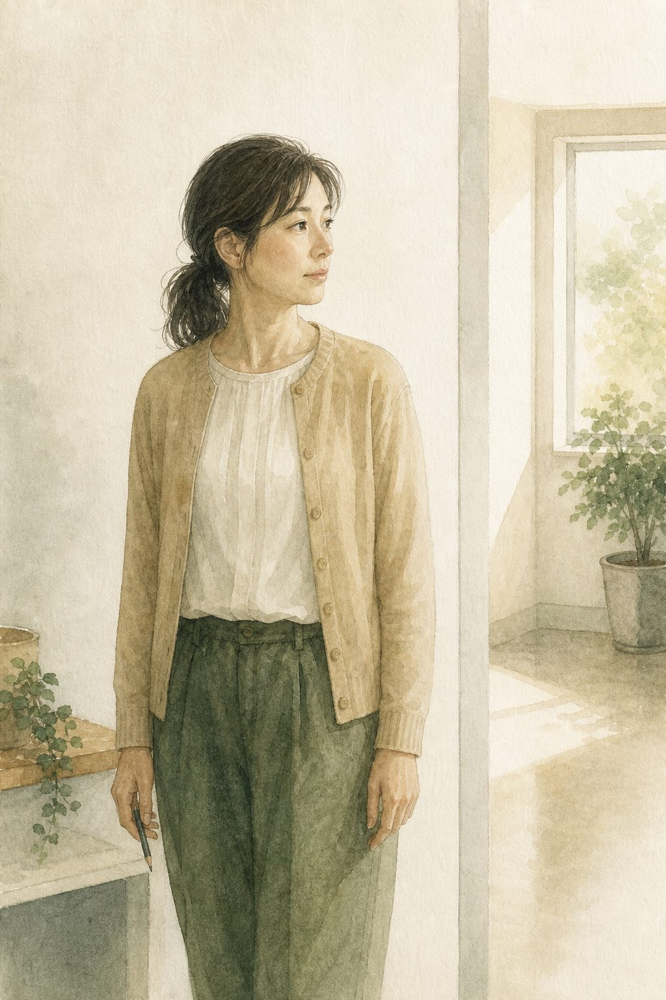

広報部会（仮）の小さな試行
日常を、言葉に。
気になったことを、ひとことだけ。

そのときは流れてしまう小さな気づきを、いったん置いておく場所です。
たとえば
- 「今日は、いつもの声かけに少し間があった」
- 「言葉はなかったけど、何度もこちらを見ていた」
- 「声をかける順番を変えたら、少し表情が違った」

ひとことを書く → ひとこと返しを見る
30秒くらい。文章にしなくても大丈夫です。
書いたひとことが、そのまま広報に使われることはありません。
必要なものだけ、広報部会で少し先を考えます。
氏名など、個人がわかる情報は書かないでください。
事故・虐待・苦情・職場の相談などは、いつもの相談・報告ルートへ。
思いついたときだけでOK。
広報部会（仮）